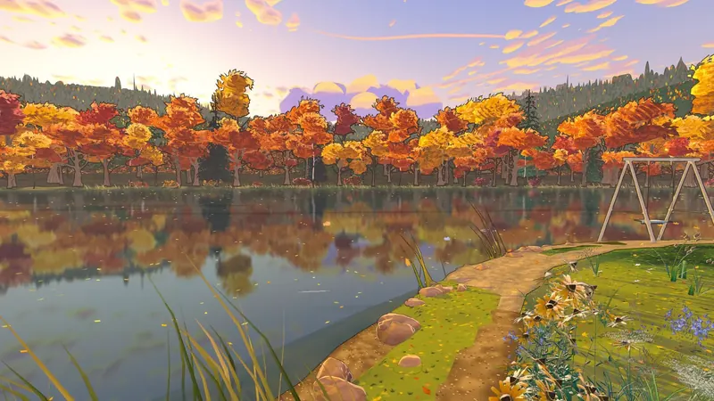
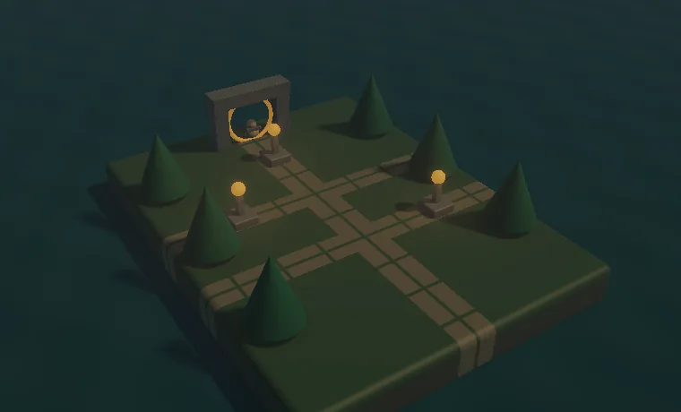
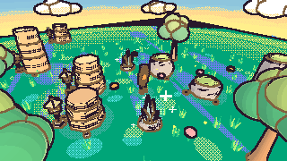
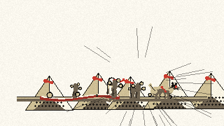

FOUNDED AND BUILT BY JACOB METOYER
HAMON Engines, worlds and instruments.
Engines, worlds and instruments.
HAMON is my company and the home of my independent work: engines, agent tools, games, fiction worlds and research instruments. HAMON Engine is one system within it, developed alongside the things we make.
01 · CORE TECHNOLOGY
The HAMON Engine
An AI-native creation engine.
One engine for games and worlds, video and film, animation, sculpting and characters, a full physics engine, and simulation, science and engineering tools, built so AI agents can drive it directly as well as people. It is a workspace of 27 Rust crates with native C++, CUDA, TypeScript and Go components, and it runs natively and in the browser through WebAssembly and WebGPU.
Built for agents
One method table served as a command line, JSON-RPC and MCP, so AI agents and tools can build, inspect, step and test the engine with no window. Typed deterministic runtime commands, replay and SHA-256 experiment receipts make what an agent did checkable. The native editor is an optional client.
Deterministic core
An archetype ECS with a work-stealing job system, a fixed timestep and seeded randomness, so a run replays exactly from its recorded input. Lockstep input-frame networking builds on the same replay model.
A full physics engine
Rigid bodies with hinges, motors, capsules and triangle surfaces; elastic strands and soft membranes (XPBD, with tearing and plastic yield); deformable terrain driven by living state; and analytical engineering solvers for hydraulics, cross-sections and rods. Native C++ solver adapters cover a MuJoCo bridge, foot-lock IK, reachability analysis and system identification.
Animation and characters
Skeletal animation with blending, IK, retargeting, morph targets, squash and stretch, and follow-through. Code-only sculpting from signed-distance shapes builds characters, creatures, birds, insects, trees, flowers and whole scenes, with no external modelling tools.
Video and perception
Native C++ modules for media ingest, camera calibration, ONNX-based tracking and a world compiler, plus CUDA kernels for skinning and splat viewing. They power the video tools below.
Rendering and style
A real-time forward PBR renderer with cascaded sun shadows, point lights and height fog, headless and hardware-qualified capture, and a style system with 17 selectable looks, from hand-painted luminous cel with ink line art to watercolor and graphic ink. Extruded 3D text from font outlines is built in.
Assets, materials, audio and scripting
Diffable text scenes and memory-mapped cooked packs, glTF import and an asset journal; half-edge mesh authoring; node-graph materials that compile to WGSL; a deterministic audio mixer; sandboxed WebAssembly scripting; and HamonLang, an experimental systems language.
Science and engineering tools
Content-addressed experiment history in Rust, TypeScript and Go, a Studio UI, an Innovation Lab integration, and runnable studies in surface diffusion, radiative cooling and electrical networks.
In progress. The AI-native authoring roadmap is open work: live authoring connected to rendering, material graphs executed in the scene renderer, procedural modeling that updates only the affected geometry, a high-quality final-image workflow, and discovery of tools and reusable assets.
The engine source is private; its work is published through the games and tools on this page.
02 · GAMES AND WORLDS · FLAGSHIP
Wildside

Real places you care about, turned into living, hand-painted worlds you explore at human, bird and insect scale, rendered live by the HAMON Engine in your browser. Its default look is hand-painted, luminous cel shading with ink line art; the engine’s style system offers sixteen others.
Play WildsideWatch the demo and read more
The places are interpreted, imagined worlds, not surveys, and the wildlife is simulated. This is a work in progress, made for MarinaHacks.
More games built on the engine

Playable in your browser
Lanternwake ↗
A small 3D island: restore three lanterns, then return to the stone arch at dawn. A published snapshot of an earlier engine build.

Proving target
The first game
A small cel-shaded 3D scene driven by a deterministic input script, checked frame by frame against golden images on a software renderer.

Action-adventure in development
Inkbound
A third-person game where the world is a living manga: panels decide causality and ink is the physics. Panels, combat and a final boss encounter exist as deterministic headless slices; art is still to come.
WebGPU browser game
Aetherline
Collect three relics, open the gate and reach it. Lives in the engine repository; not published on this site.
Physics puzzle
Counterpoise
Plan three work orders on a hinged beam, release the load, and read the result from the real physics world. Playable in the terminal.
Adventure core in development
Glasswake
A character crosses a cleft on a real physical rope with bounded reeling and release momentum. The simulation and input replays exist; the visuals are planned.
Other worlds
Spire of Octaves
Fiction with its own site, grouped by series. Begin with Salt’s End, What Strays and Seamwork.
Echo
A game set in the Spire world, now being built in the HAMON Engine. Private and early.
03 · VIDEO, FILM AND MOTION
Tools for working with moving images
Creation and analysis tools for video, from new camera angles on ordinary footage to forecasts replayed against what actually happened. They are early and mostly private; each says plainly what it does not claim.
Phantom Window
Walk a virtual camera through ordinary video. It estimates depth per frame, recovers the camera path, and renders new viewpoints on the GPU, marking which pixels were observed and which inferred.
Replay Forge — basketball studio
A separate project from ReplayForge, the replay-debugging hackathon tool. A basketball replay studio: connect a discussion to the relevant possession, branch the replay, and keep every claim bound to the source video.
Captionverse
Spatial, speaker-aware captions and sound cues for video, with hash-matched cue manifests and local speech recognition that produces reviewable drafts.
Chronos Vision
A temporal observatory for video: color-track measurements, three contrasting future-trajectory hypotheses, and past forecasts replayed against later frames. An experimental first release.
Mechanism
A motion lab for machinery. Track markers in real video, compare image-plane paths and fit constrained kinematic models recomputed from saved evidence.
04 · SCIENCE AND RESEARCH INSTRUMENTS
Instruments for looking closely
Evidence-first tools that share one approach: show what was observed, keep the uncertainty, and refuse to overclaim. The repositories are private and have no public demo yet.
WorldLaw
Learns executable physical laws from observations and actively tests the resulting hypotheses.
Afterimage
A physical-world evidence engine. It reconstructs what is known and what might be true from fragmentary media, keeps competing explanations, and says what to observe next.
Synapse
A spatial observatory for real running computational systems. The first slice is a local, read-only browser instrument for a live process tree.
Microverse
An early investigator for microscopic life: follow individuals through supplied detections and keep competing explanations of an encounter.
MATERIALTRUTH
A photometric inspection desk for surfaces. It infers relative albedo and normals from multi-illumination images and refuses where the data cannot support a result.
05 · AGENTS AND WORKSHOP
The rest of the estate
The tooling that lets one person run all of this. Both are private and early.
HAMON agent platform
Early work on a supervised agent runtime: durable claims, recovery and replay, and memory with explicit rights. Built as deterministic fixtures; not a deployed product.
HAMON Workshop
A simulated workshop operated through MCP: discover, reserve and run a virtual workcell, keep failed actions, and recover from the last committed pose. A software foundation for physical capability, not hardware yet.
FOUNDER
Jacob Metoyer
I study computer science and physics at Cal State Long Beach, and I build HAMON. My research, writing and other work are on the main site.